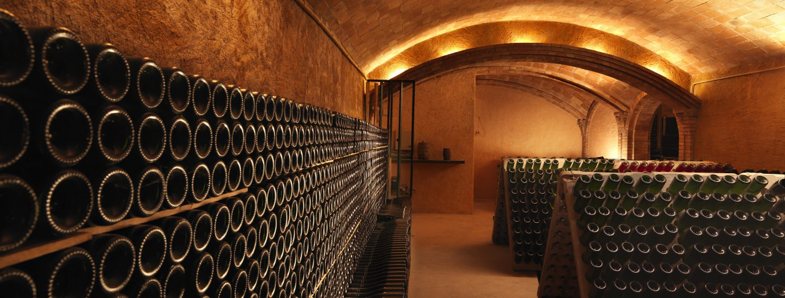

Joan Segura Pujades

La nostre cava es troben al municipi de Torrelavit, al bell mig del Pendedès. Però l’origen dels nostres vins i caves comença en la dedicació i el cultiu acurat de les vinyes situades en dues zones de la comarca: A Torrelavit on el sòl i el clima és més apropiat per les varietats macabeo i xarel.lo i Mediona on l’aigua, les hores d’insolació i la temperatura estan en perfecte equilibri pel creixement i maduració de raïms blancs parellada, així com els negres merlot, ull de llebre i syrha.